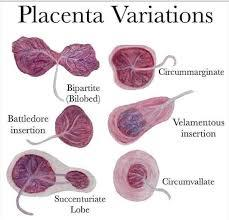

Source: Provided Material — Book Obstetrics 2025-2026, Ch. 1 (p. 1)
Where does fertilization normally occur?
Fertilization occurs at the ampulla of the fallopian tube, forming a zygote.
How many days after fertilization does the morula reach the uterine cavity?
The morula reaches the uterine cavity 3 days after fertilization, aided by cilia motility.
The inner cell mass of the blastocyst will form:
The inner cell mass (embryonic mass) will form the embryo, while the outer cell mass (trophoblast) provides nutrition.
What enzyme is released by the sperm during capacitation to aid fertilization?
The sperm head swells and increases hyaluronidase enzymes during capacitation to penetrate the ovum.
The blastocyst remains free in the uterine cavity for how long before implantation?
The blastocyst remains free for 3 days in the uterine cavity, nourished by secretions from the endometrium.
2. Implantation
This occurs on 6th – 7th days after ovulation by penetration of the trophoblast into the secretory endometrium (decidua basalis).
Functions of the decidua:
Site of implantation & nutrition of the blastocyst.
Shares in formation of the placenta.
Protective layer against the invasive power of trophoblast.
The clinical significance of this section is:
Understanding these concepts directly informs clinical management.
In obstetric practice, this knowledge helps:
Comprehensive knowledge enables prevention, early diagnosis, and optimal management.
Which of the following is a key concept?
Understanding key concepts is fundamental to clinical management.
When assessing this aspect, the most important factor is:
Assessment requires integration of clinical, laboratory, and imaging findings.
Which of the following is a key concept?
Understanding key concepts is fundamental to clinical management.
📝 Question 1 of 2 | 🔴 Hard
What is the classification system described in this context?
Based on: 2. Implantation This occurs on 6 th – 7 th days after ovulation by penetration of the trophoblast into the secretory endometrium (decidua basalis). Functions of the decidua: Site of implantation & nutrition of the blastocyst. Shares in formation
📝 Question 2 of 2 | 🔴 Hard
What is the classification system described in this context?
Based on: 3. Formation of the Villi The trophoblast is differentiated into 2 layers → Cytotrophoblast (inner). Syncytiotrophoblast (outer). Trophoblast forms finger-like projections into decidua → 1° villus. Mesoderm develops in the 1° villus (CT core) → 2° vi
3. Formation of the Villi
The trophoblast is differentiated into 2 layers →
Cytotrophoblast (inner).
Syncytiotrophoblast (outer).
Trophoblast forms finger-like projections into decidua → 1° villus.
Mesoderm develops in the 1° villus (CT core) → 2° villus.
Vascularization of 2° villus with fetal vessels → 3° villus.
There are two types of villi:
Anchoring villi: fixation & attachment.
Free villi: food & nutrition (highly vascular). Functional unit (HCG → maintain CL for 10 weeks).
Clinical Pearl
The cytotrophoblast is the inner cellular layer that retains mitotic activity. The syncytiotrophoblast is the outer multinucleated layer formed by fusion of cytotrophoblast cells. It is the syncytiotrophoblast that secretes HCG, HPL, estrogen, and progesterone.
Which of the following is a key concept?
Understanding key concepts is fundamental to clinical management.
In obstetric practice, this knowledge helps:
Comprehensive knowledge enables prevention, early diagnosis, and optimal management.
When assessing this aspect, the most important factor is:
Assessment requires integration of clinical, laboratory, and imaging findings.
The clinical significance of this section is:
Understanding these concepts directly informs clinical management.
Which of the following is a key concept?
Understanding key concepts is fundamental to clinical management.
4. Formation of Choriodecidual Spaces
The trophoblast invades the mouth of endometrial vessels → delivers maternal blood into the chorio-decidual space → 1° wave of invasion.
At 20 weeks, the trophoblast invades & destroys the media of spiral vessels which convert into wide-mouthed sinuses → 2° wave of invasion.
Note
Failure of the 2° wave of trophoblastic invasion of spiral arteries is a key mechanism in pre-eclampsia and IUGR (intrauterine growth restriction).
Which of the following is a key concept?
Understanding key concepts is fundamental to clinical management.
The clinical significance of this section is:
Understanding these concepts directly informs clinical management.
When assessing this aspect, the most important factor is:
Assessment requires integration of clinical, laboratory, and imaging findings.
In obstetric practice, this knowledge helps:
Comprehensive knowledge enables prevention, early diagnosis, and optimal management.
Which of the following is a key concept?
Understanding key concepts is fundamental to clinical management.
📝 Question 1 of 2 | 🔴 Hard
What is the classification system described in this context?
Based on: 4. Formation of Choriodecidual Spaces The trophoblast invades the mouth of endometrial vessels → delivers maternal blood into the chorio-decidual space → 1° wave of invasion . At 20 weeks, the trophoblast invades & destroys the media of spiral ve
📝 Question 2 of 2 | 🔴 Hard
What is the classification system described in this context?
Based on: 5. Placenta 5.1 Structure Shape: discoid, 500 g, 20–25 cm in diameter. Thickness: 2 cm in center, gradually thins towards periphery. Cord insertion: eccentric. 2 Surfaces: Fetal surface is smooth & covered by membranes. Maternal surface is divide
5. Placenta
5.1 Structure
Shape: discoid, 500 g, 20–25 cm in diameter.
Thickness: 2 cm in center, gradually thins towards periphery.
Cord insertion: eccentric.
2 Surfaces:
Fetal surface is smooth & covered by membranes.
Maternal surface is divided into 12–15 cotyledons.
2 Parts:
Fetal part → Chorion frondosum.
Maternal part → Decidua basalis.
5.2 Decidual Subdivisions
The rest of chorion which is not sharing in placental formation → Chorion laeve.
The rest of the decidua overlying the developing ovum → Decidua capsularis.
The decidua covering the rest of uterine cavity → Decidua parietalis (vera).
5.3 Functions of Placenta
Gas transport, Nutrition, and Excretion
Water & electrolytes by simple diffusion.
Glucose, amino acids by facilitated diffusion.
Ca, Fe, minerals by active transport.
Immunoglobulins & LDL by pinocytosis.
Hormones
HCG, HPL, estrogen and progesterone.
Placental Barrier
Trophoblast, villous stroma, and fetal blood-vessel endothelium.
5.4 Abnormalities of Placenta
5.4.1 Abnormal Shape
Bipartite: two parts united by vessels & membranes.
Bilobate: two lobes connected by placental tissue.
Placenta succenturiata (accessory lobe).
Placenta circumvallate: a whitish ring composed of decidua is seen around the placenta from its fetal surface.
Placenta fenestrate: an opening in the placenta is present (a part of placenta is missed).
Source Image

Placenta Variations — Shape Abnormalities
Source: Provided Material — Book Obstetrics 2025-2026, Ch. 1 (p. 3)
5.4.2 Abnormal Site of Implantation
In the lower uterine segment (LUS) → placenta previa.
5.4.3 Abnormal Size
Small (associated with IUGR or infarcts).
Large (hyperplacentosis): Rh, DM, twins, syphilis.
5.4.4 Other Abnormalities
Abnormal adherence → placenta accreta.
Tumors of placenta → vesicular mole, choriocarcinoma, chorioangioma.
Abnormal attachment of the cord.
In obstetric practice, this knowledge helps:
Comprehensive knowledge enables prevention, early diagnosis, and optimal management.
The clinical significance of this section is:
Understanding these concepts directly informs clinical management.
When assessing this aspect, the most important factor is:
Assessment requires integration of clinical, laboratory, and imaging findings.
Which of the following is a key concept?
Understanding key concepts is fundamental to clinical management.
Which of the following is a key concept?
Understanding key concepts is fundamental to clinical management.
6. Umbilical Cord
6.1 Structure
Shape: 50 cm long & 2 cm in diameter.
Contents: 2 arteries & 1 vein in Wharton jelly.
Mnemonic — AVA
Arteries (×2, carry deoxygenated blood Away from fetus) and Vein (×1, brings oxygenated blood Via to fetus). The single vein carries oxygenated blood to the fetus; two arteries carry reduced (deoxygenated) blood from the fetus to placenta.
True and false (false knot = localized collection of Wharton's jelly).
6.2.4 Other
Congenital tumors or cysts.
Absence of one umbilical artery → congenital fetal malformation (CFMF), intrauterine growth restriction (IUGR).
Warning
Single umbilical artery (SUA) is associated with congenital fetal malformations and IUGR — warrants detailed ultrasound assessment.
When assessing this aspect, the most important factor is:
Assessment requires integration of clinical, laboratory, and imaging findings.
Which of the following is a key concept?
Understanding key concepts is fundamental to clinical management.
The clinical significance of this section is:
Understanding these concepts directly informs clinical management.
In obstetric practice, this knowledge helps:
Comprehensive knowledge enables prevention, early diagnosis, and optimal management.
Which of the following is a key concept?
Understanding key concepts is fundamental to clinical management.
📝 Question 1 of 3 | 🔴 Hard
What is the classification system described in this context?
Based on: 6. Umbilical Cord 6.1 Structure Shape: 50 cm long & 2 cm in diameter. Contents: 2 arteries & 1 vein in Wharton jelly. Mnemonic — AVA A rteries (×2, carry deoxygenated blood A way from fetus) and V ein (×1, brings oxygenated blood V ia to fetu
📝 Question 2 of 3 | 🔴 Hard
What is the classification system described in this context?
Based on: 7. Amniotic Fluid 7.1 Source of Amniotic Fluid Maternal: transudation through placenta & cord (mainly 1st half of pregnancy). Fetal: urine (mainly in the 2nd half of pregnancy). Then it is removed by transudation + fetal swallowing — a dynamic ci
📝 Question 3 of 3 | 🔴 Hard
What is the classification system described in this context?
Based on: 8. Hormones 8.1 Proteins (Glycoproteins) 8.1.1 Human Chorionic Gonadotrophin (HCG) Source: syncytiotrophoblast. Can be detected one week before the missed period. It is composed of 2 subunits: α subunit — similar to that of FSH, LH and TSH. β subunit
7. Amniotic Fluid
7.1 Source of Amniotic Fluid
Maternal: transudation through placenta & cord (mainly 1st half of pregnancy).
Fetal: urine (mainly in the 2nd half of pregnancy).
Then it is removed by transudation + fetal swallowing — a dynamic circulation.
Balance between production & absorption keeps its volume at normal range.
7.2 Volume by Gestational Age
Gestational Age
Volume (mL)
Gestational Age
Volume (mL)
6 weeks
5 mL
10 weeks
30 mL
20 weeks
300 mL
30 weeks
600 mL
36 weeks
1000 mL
38–40 weeks
800 mL
7.3 Composition
98% clear water.
1–2% crystalloids (slightly alkaline), enzymes, lipids, hormones, and proteins.
7.4 Functions of Amniotic Fluid
During Pregnancy
During Labor
Protection against trauma.
Prevents adhesions between fetal skin & amnion.
Prevents infection.
Thermoregulation.
Allows free movement of fetus → muscular development.
Development of alveoli.
Helps cervical dilatation.
Prevents direct fetal & placental compression by the uterine wall.
Wash of birth canal.
7.5 Abnormalities
Volume: ↑ → polyhydramnios; ↓ → oligohydramnios.
Meconium staining → meconium aspiration syndrome.
Inflammation → chorioamnionitis.
The clinical significance of this section is:
Understanding these concepts directly informs clinical management.
In obstetric practice, this knowledge helps:
Comprehensive knowledge enables prevention, early diagnosis, and optimal management.
When assessing this aspect, the most important factor is:
Assessment requires integration of clinical, laboratory, and imaging findings.
Which of the following is a key concept?
Understanding key concepts is fundamental to clinical management.
Which of the following is a key concept?
Understanding key concepts is fundamental to clinical management.
8. Hormones
8.1 Proteins (Glycoproteins)
8.1.1 Human Chorionic Gonadotrophin (HCG)
Source: syncytiotrophoblast.
Can be detected one week before the missed period.
It is composed of 2 subunits:
α subunit — similar to that of FSH, LH and TSH.
β subunit — specific to hCG.
Function
Use
Maintenance of corpus luteum (luteotropic).
Diagnosis of pregnancy.
Immunological suppressive action.
Diagnoses of pregnancy abnormalities (↑ in Down syndrome).
Stimulates fetal testosterone secretion.
Diagnoses and follow-up of vesicular mole.
8.1.2 Human Placental Lactogen (HPL)
Source: syncytiotrophoblast.
Functions:
Very similar to GH & prolactin → may stimulate growth of breasts.
On CHO & fat (anti-insulin effect) → spares glucose & fatty acids for the fetus.
8.2 Steroid Hormones
8.2.1 Estrogen
Estrogens are formed by the conversion of DHEAS (dehydroepiandrosterone) from maternal and fetal sources (adrenal gland mainly) to estradiol (E2) and estriol (E3).
It is responsible with progesterone for most of the maternal changes due to pregnancy, especially in the genital tract and breasts.
8.2.2 Progesterone
Synthetized by syncytiotrophoblast from maternal cholesterol.
Provides a precursor for the fetal adrenal to produce glucocorticoids and mineralocorticoids.
When assessing this aspect, the most important factor is:
Assessment requires integration of clinical, laboratory, and imaging findings.
Which of the following is a key concept?
Understanding key concepts is fundamental to clinical management.
In obstetric practice, this knowledge helps:
Comprehensive knowledge enables prevention, early diagnosis, and optimal management.
The clinical significance of this section is:
Understanding these concepts directly informs clinical management.
Which of the following is a key concept?
Understanding key concepts is fundamental to clinical management.
📝 Question 1 of 3 | 🔴 Hard
Recurrence risk in future pregnancies is:
Most obstetric conditions carry an increased recurrence risk.
📝 Question 2 of 3 | 🟡 Moderate
Which of the following is a key risk factor mentioned?
The content identifies several risk factors for this condition.
📝 Question 3 of 3 | 🟡 Moderate
What is the recommended first-line management?
First-line management is typically conservative unless contraindicated.
9. Student Activity
Each student should bring five pictures representing five anatomical abnormalities of the placenta, then provide them online at a website determined by the lecturer of this chapter.
10. Questions
Practice questions for this chapter are available at the following link:
Source image 2 — Placenta Variations diagram: Provided Material — Book Obstetrics 2025-2026, Ch. 1 (p. 3).
Source image 3 (withheld): Chorionic villi development illustration contained in the source PDF carried a third-party stock-photography watermark; it has been deliberately omitted to comply with the rule against watermarked images. All educational content it conveyed (1°, 2°, 3° villi; anchoring vs. free villi) is preserved in the textual sections above.